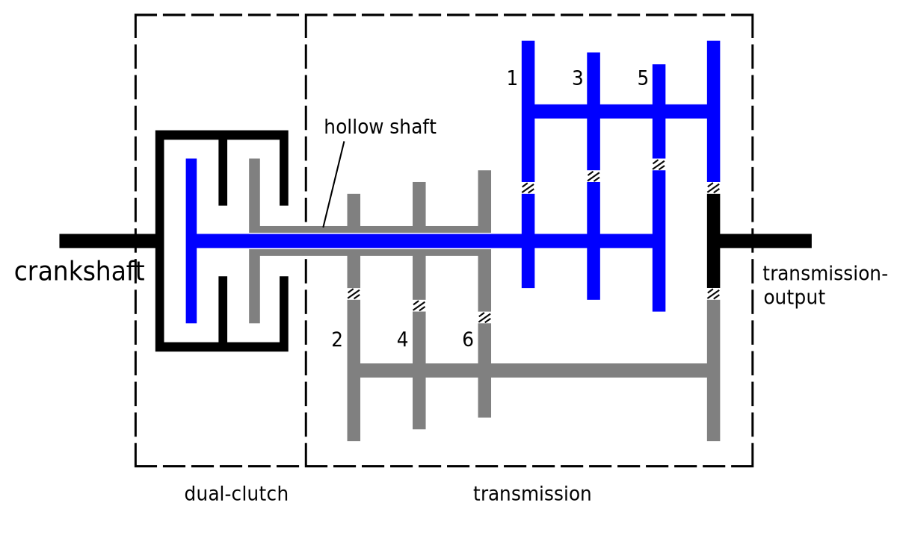
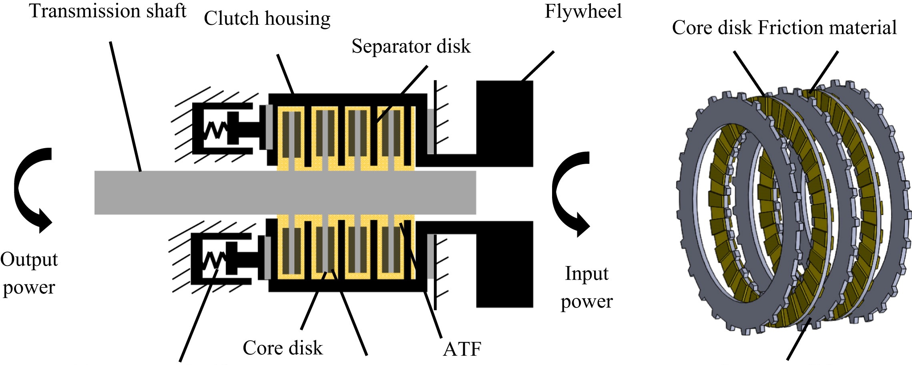
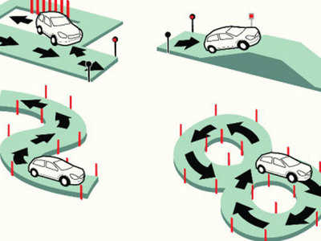

Friction Plate Fatigue Testing
Dual Clutch Transmission

[src]
- In a DCT one clutch drives odd numbered gears and the other clutch drives the even numbered gears.
- In a DCT an odd gear can be preselected while the vehicle is in an even gear and vice versa, which makes it quite fast for gear shifts.
Clutch Pack

[src]
- Clutches are the interface between engine and transmission in vehicle drivetrains.
- During the development of the wet clutch system in the Dual Clutch Transmissions, there is a need to know the durability and the friction behaviour of the clutch packs.
Drive Cycle

[src]
- Clutches are the interface between engine and transmission in vehicle drivetrains.
- During the development of the wet clutch system in the Dual Clutch Transmissions, there is a need to know the durability and the friction behaviour of the clutch packs.
❮
❯
![[src]](https://en.wikipedia.org/wiki/Dual-clutch_transmission#/media/File:Dual-clutch_transmission.svg){kind=link}
![[src]](https://ars.els-cdn.com/content/image/1-s2.0-S0043164815002033-gr1_lrg.jpg){kind=link}
![[src]](https://timesofindia.indiatimes.com/thumb/msid-56835043,imgsize-83862,width-400,resizemode-4/56835043.jpg){kind=link}